RABIT

Robust Analytical Bayesian Inference Tool
What is RABIT?
RABIT is a data visualisation tool leveraging Bayesian Parameter Estimation in the context of Gravitational Wave Astrophysics.
Try it out
https://rabit2022.cloud.edu.au/plots
Features
Modern web-based interface
RABIT is designed to be fast, beautiful and flexible, leveraging the latest web technologies such as React and D3.
Easy to use
No need to install complicated programs or libraries, or spend hours writing scripts to visualise your data. Just upload your results file, and pick the parameters you want to show. All you need is a (reasonably modern) web browser, and you're set.
Share your graph easily
You can export your plot to SVG and PNG and embed it to your report, or generate a shareable link so everyone can see your plot easily, with all the parameters and view settings set.
Free and open source
We believe that tools like RABIT should be accessible and extensible by anyone for any purpose. All the source code is available on GitHub under ISC license for you to look and tinker around with. You can run your own instance if you really want to!
Got any issue, ideas, or even patches you want to share with us? Head over to our contributing guide to help us improve RABIT.
Creating a plot
One of RABIT's premier features is the creation of Bayesian inference plots.
1. Navigate to the upload page
Navigate via the sidebar or go directly to the /upload URL. On the upload page, users will be able to create a plot by filling out the mandatory fields.
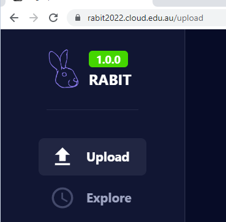
2. Add a plot title and description
A title for the plot must be added. An optional description can also be created.
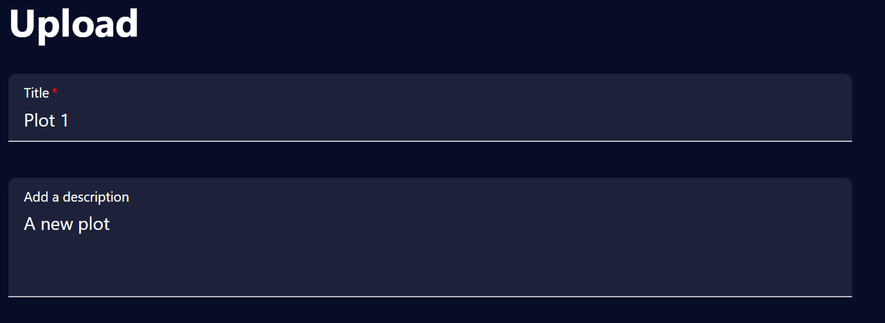
3. Parameter selection
At least one class of parameters must be selected for upload. The current parameter options are 'intrinsic', 'extrinsic' and 'other'. To upload all three of these parameter classes, a user can select 'all'.
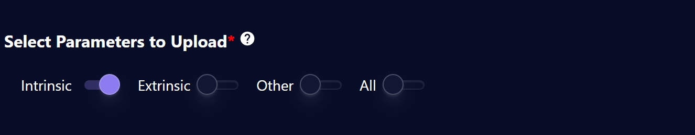
Specific parameters can be viewed by clicking the small question mark widget
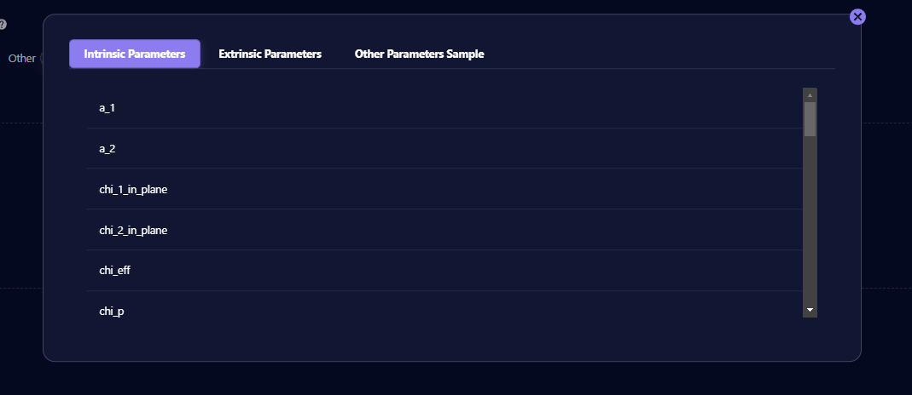
4. Select raw JSON data files
Drag and drop or select a data file from its desktop directory.
The system currently supports a maximum of four files. All data must be in the accepted JSON file format.
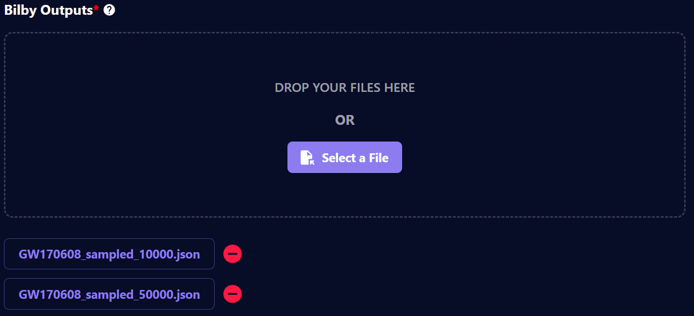
The accepted file format can be viewed by clicking the small question mark widget
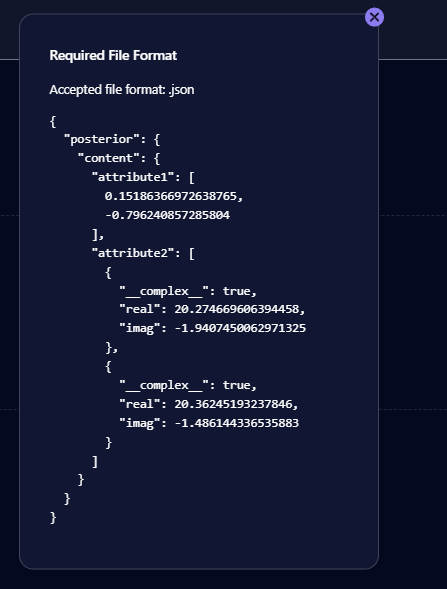
5. Upload the plot
Once the above fields are completed the plot can be created by clicking the upload button.
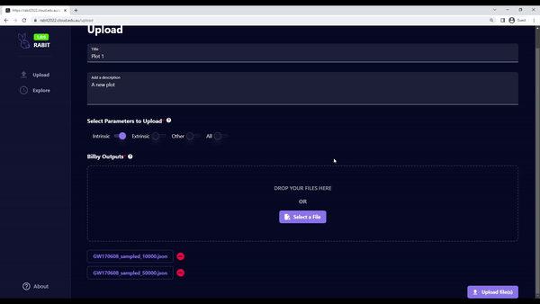
Viewing a plot
One of RABIT's premier features is viewing Bayesian inference plots. For a plot to be viewed, it must first be created. If you haven't already done so, read the plot creation guide here.
1. Navigate to the plots page
Navigate to 'Explore' from the sidebar, or go directly to the /plots URL.
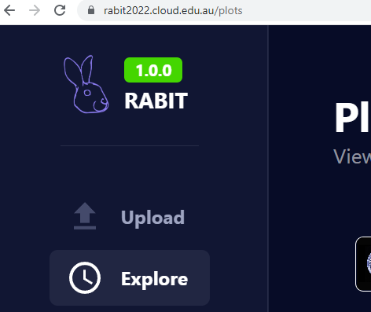
2. Select a plot to view
Select which plot to view from the plots list
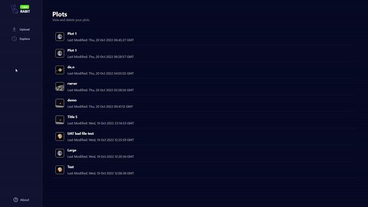
3. Parameter selection
From each class of parameter that was uploaded, select the specific parameters to plot
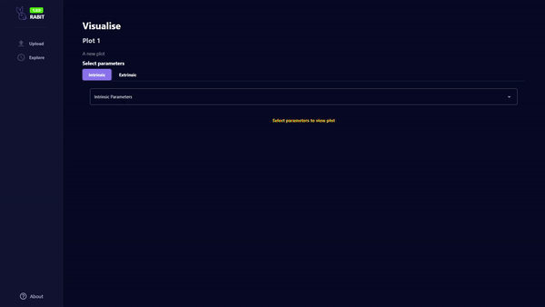
4. Modify the colour of the plots
Plot colours can be modified by selecting the colour box. Use contrasting colours for multi-set plots to enhance readability.
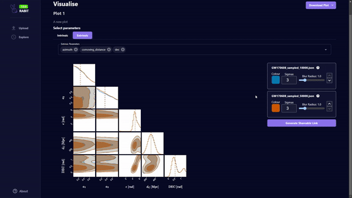
5. Reordering multi-dataset plots
Change the order of the plots using the arrow button. Lower order datasets will be displayed on top of higher order datasets.
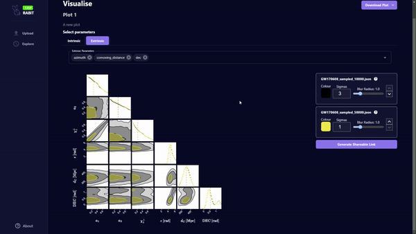
6. Adjust plot sigma value
The plot sigma represents the number of deviations from the mean. Increasing this value will increase the spread of the plot. This value is set to 3 by default.
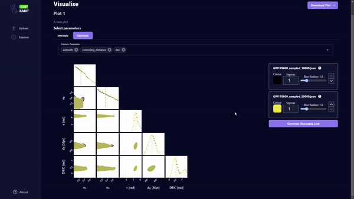
7. Adjust plot blur radius
The blur radius can be increased to filter noise from the data. This value is set to 1.0 by default.
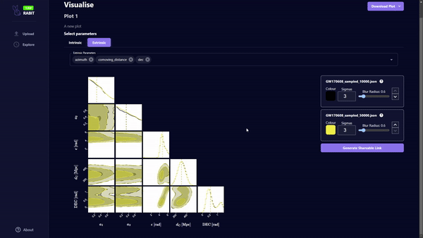
8. Save plot as an image
Plots can be saved locally in PNG or SVG format.
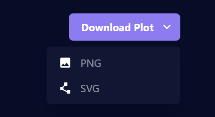
9. Generate a shareable URL for the plot
Create a shareable link for a plot. From the viewers perspective, the shared plot cannot be modified, but can be downloaded.
Posterior LaTeX Labels
RABIT features a set of predefined LaTeX labels for certain parameters. The following is a table showing the Bilby outputted parameter, and its corresponding LaTeX label in RABIT:
Key:
- Posterior Name: The name of the posterior parameter in a Bilby-outputted JSON file
- Posterior Label: Unrendered LaTeX of the posterior's label
- Unit Label: Unrendered LaTeX of the posterior's units (if available)
- Full LaTeX Label: Rendered LaTeX combining the posterior's label and unit label. This is the label that is used in RABIT
| Posterior name | Posterior label | Unit label | Full LaTeX label |
|---|---|---|---|
chirp_mass | \mathcal{M} | M_{\odot} | \(\mathcal{M} \ [M_{\odot}]\) |
mass_ratio | q | \(q\) | |
mass_1 | m_1^{\rm Lab} | M_{\odot} | \(m_1^{\rm Lab} \ [M_{\odot}]\) |
mass_2 | m_2^{\rm Lab} | M_{\odot} | \(m_2^{\rm Lab} \ [M_{\odot}]\) |
total_mass | M^{\rm Lab} | M_{\odot} | \(M^{\rm Lab} \ [M_{\odot}]\) |
mass_1_source | m_1^{\rm Source} | M_{\odot} | \(m_1^{\rm Source} \ [M_{\odot}]\) |
mass_2_source | m_2^{\rm Source} | M_{\odot} | \(m_2^{\rm Source} \ [M_{\odot}]\) |
total_mass_source | M^{\rm Source} | M_{\odot} | \(M^{\rm Source} \ [M_{\odot}]\) |
a_1 | a_1 | \(a_1\) | |
a_2 | a_2 | \(a_2\) | |
tilt_1 | \theta_1 | {\rm rad} | \(\theta_1 \ [{\rm rad}]\) |
tilt_2 | \theta_2 | {\rm rad} | \(\theta_2 \ [{\rm rad}]\) |
cos_tilt_1 | \cos{\theta_1} | \(\cos{\theta_1}\) | |
cos_tilt_2 | \cos{\theta_2} | \(\cos{\theta_2}\) | |
phi_12 | \phi_{12} | {\rm rad} | \(\phi_{12} \ [{\rm rad}]\) |
phi_jl | \phi_{\rm JL} | {\rm rad} | \(\phi_{\rm JL} \ [{\rm rad}]\) |
luminosity_distance | d_{\rm L} | {\rm Mpc} | \(d_{\rm L} \ [{\rm Mpc}]\) |
ra | {\rm RA} | {\rm rad} | \({\rm RA} \ [{\rm rad}]\) |
theta_jn | \theta_{JN} | {\rm rad} | \(\theta_{JN} \ [{\rm rad}]\) |
cos_theta_jn | \cos{\theta_{JN}} | \(\cos{\theta_{JN}}\) | |
psi | \psi | {\rm rad} | \(\psi \ [{\rm rad}]\) |
phase | \phi | {\rm rad} | \(\phi \ [{\rm rad}]\) |
phi_1 | \phi_1 | \(\phi_1\) | |
phi_2 | \phi_1 | \(\phi_1\) | |
geocent_time | t_c | {\rm s} | \(t_c \ [{\rm s}]\) |
azimuth | \epsilon | {\rm rad} | \(\epsilon \ [{\rm rad}]\) |
zenith | \kappa | {\rm rad} | \(\kappa \ [{\rm rad}]\) |
iota | \iota | {\rm rad} | \(\iota \ [{\rm rad}]\) |
cos_iota | \cos{\iota} | \(\cos{\iota}\) | |
redshift | z | \(z\) | |
eccentricity | e | \(e\) | |
dec | {\rm DEC} | {\rm rad} | \({\rm DEC} \ [{\rm rad}]\) |
chi_1 | \chi_1 | \(\chi_1\) | |
chi_2 | \chi_2 | \(\chi_2\) | |
chi_1_in_plane | \chi_1^{\perp} | \(\chi_1^{\perp}\) | |
chi_2_in_plane | \chi_2^{\perp} | \(\chi_2^{\perp}\) | |
chi_eff | \chi_{\rm eff} | \(\chi_{\rm eff}\) | |
chi_p | \chi_{\rm p} | \(\chi_{\rm p}\) | |
spin_1x | S_{1,x} | \(S_{1,x}\) | |
spin_1y | S_{1,y} | \(S_{1,y}\) | |
spin_1z | S_{1,z} | \(S_{1,z}\) | |
spin_2x | S_{2,x} | \(S_{2,x}\) | |
spin_2y | S_{2,y} | \(S_{2,y}\) | |
spin_2z | S_{2,z} | \(S_{2,z}\) | |
comoving_distance | d_{\rm C} | {\rm Mpc} | \(d_{\rm C} \ [{\rm Mpc}]\) |
symmetric_mass_ratio | \eta | \(\eta\) | |
lambda_1 | \Lambda_1 | \(\Lambda_1\) | |
lambda_2 | \Lambda_2 | \(\Lambda_2\) | |
lambda_tilde | \tilde{\Lambda} | \(\tilde{\Lambda}\) | |
delta_lambda_tilde | \delta \tilde{\Lambda} | \(\delta \tilde{\Lambda}\) | |
H1_time | t_H | {\rm s} | \(t_H \ [{\rm s}]\) |
time_jitter | \delta t | {\rm s} | \(\delta t \ [{\rm s}]\) |
recalib_H1_amplitude_0 | A^{H1}_0 | \(A^{H1}_0\) | |
recalib_H1_amplitude_1 | A^{H1}_1 | \(A^{H1}_1\) | |
recalib_H1_amplitude_2 | A^{H1}_2 | \(A^{H1}_2\) | |
recalib_H1_amplitude_3 | A^{H1}_3 | \(A^{H1}_3\) | |
recalib_H1_amplitude_4 | A^{H1}_4 | \(A^{H1}_4\) | |
recalib_H1_amplitude_5 | A^{H1}_5 | \(A^{H1}_5\) | |
recalib_H1_amplitude_6 | A^{H1}_6 | \(A^{H1}_6\) | |
recalib_H1_amplitude_7 | A^{H1}_7 | \(A^{H1}_7\) | |
recalib_H1_amplitude_8 | A^{H1}_8 | \(A^{H1}_8\) | |
recalib_H1_amplitude_9 | A^{H1}_9 | \(A^{H1}_9\) | |
recalib_H1_phase_0 | \phi^{H1}_0 | \(\phi^{H1}_0\) | |
recalib_H1_phase_1 | \phi^{H1}_1 | \(\phi^{H1}_1\) | |
recalib_H1_phase_2 | \phi^{H1}_2 | \(\phi^{H1}_2\) | |
recalib_H1_phase_3 | \phi^{H1}_3 | \(\phi^{H1}_3\) | |
recalib_H1_phase_4 | \phi^{H1}_4 | \(\phi^{H1}_4\) | |
recalib_H1_phase_5 | \phi^{H1}_5 | \(\phi^{H1}_5\) | |
recalib_H1_phase_6 | \phi^{H1}_6 | \(\phi^{H1}_6\) | |
recalib_H1_phase_7 | \phi^{H1}_7 | \(\phi^{H1}_7\) | |
recalib_H1_phase_8 | \phi^{H1}_8 | \(\phi^{H1}_8\) | |
recalib_H1_phase_9 | \phi^{H1}_9 | \(\phi^{H1}_9\) | |
recalib_H1_frequency_0 | f^{H1}_0 | {\rm Hz} | \(f^{H1}_0 \ [{\rm Hz}]\) |
recalib_H1_frequency_1 | f^{H1}_1 | {\rm Hz} | \(f^{H1}_1 \ [{\rm Hz}]\) |
recalib_H1_frequency_2 | f^{H1}_2 | {\rm Hz} | \(f^{H1}_2 \ [{\rm Hz}]\) |
recalib_H1_frequency_3 | f^{H1}_3 | {\rm Hz} | \(f^{H1}_3 \ [{\rm Hz}]\) |
recalib_H1_frequency_4 | f^{H1}_4 | {\rm Hz} | \(f^{H1}_4 \ [{\rm Hz}]\) |
recalib_H1_frequency_5 | f^{H1}_5 | {\rm Hz} | \(f^{H1}_5 \ [{\rm Hz}]\) |
recalib_H1_frequency_6 | f^{H1}_6 | {\rm Hz} | \(f^{H1}_6 \ [{\rm Hz}]\) |
recalib_H1_frequency_7 | f^{H1}_7 | {\rm Hz} | \(f^{H1}_7 \ [{\rm Hz}]\) |
recalib_H1_frequency_8 | f^{H1}_8 | {\rm Hz} | \(f^{H1}_8 \ [{\rm Hz}]\) |
recalib_H1_frequency_9 | f^{H1}_9 | {\rm Hz} | \(f^{H1}_9 \ [{\rm Hz}]\) |
recalib_L1_amplitude_0 | A^{L1}_0 | \(A^{L1}_0\) | |
recalib_L1_amplitude_1 | A^{L1}_1 | \(A^{L1}_1\) | |
recalib_L1_amplitude_2 | A^{L1}_2 | \(A^{L1}_2\) | |
recalib_L1_amplitude_3 | A^{L1}_3 | \(A^{L1}_3\) | |
recalib_L1_amplitude_4 | A^{L1}_4 | \(A^{L1}_4\) | |
recalib_L1_amplitude_5 | A^{L1}_5 | \(A^{L1}_5\) | |
recalib_L1_amplitude_6 | A^{L1}_6 | \(A^{L1}_6\) | |
recalib_L1_amplitude_7 | A^{L1}_7 | \(A^{L1}_7\) | |
recalib_L1_amplitude_8 | A^{L1}_8 | \(A^{L1}_8\) | |
recalib_L1_amplitude_9 | A^{L1}_9 | \(A^{L1}_9\) | |
recalib_L1_phase_0 | \phi^{L1}_0 | \(\phi^{L1}_0\) | |
recalib_L1_phase_1 | \phi^{L1}_1 | \(\phi^{L1}_1\) | |
recalib_L1_phase_2 | \phi^{L1}_2 | \(\phi^{L1}_2\) | |
recalib_L1_phase_3 | \phi^{L1}_3 | \(\phi^{L1}_3\) | |
recalib_L1_phase_4 | \phi^{L1}_4 | \(\phi^{L1}_4\) | |
recalib_L1_phase_5 | \phi^{L1}_5 | \(\phi^{L1}_5\) | |
recalib_L1_phase_6 | \phi^{L1}_6 | \(\phi^{L1}_6\) | |
recalib_L1_phase_7 | \phi^{L1}_7 | \(\phi^{L1}_7\) | |
recalib_L1_phase_8 | \phi^{L1}_8 | \(\phi^{L1}_8\) | |
recalib_L1_phase_9 | \phi^{L1}_9 | \(\phi^{L1}_9\) | |
recalib_L1_frequency_0 | f^{L1}_0 | {\rm Hz} | \(f^{L1}_0 \ [{\rm Hz}]\) |
recalib_L1_frequency_1 | f^{L1}_1 | {\rm Hz} | \(f^{L1}_1 \ [{\rm Hz}]\) |
recalib_L1_frequency_2 | f^{L1}_2 | {\rm Hz} | \(f^{L1}_2 \ [{\rm Hz}]\) |
recalib_L1_frequency_3 | f^{L1}_3 | {\rm Hz} | \(f^{L1}_3 \ [{\rm Hz}]\) |
recalib_L1_frequency_4 | f^{L1}_4 | {\rm Hz} | \(f^{L1}_4 \ [{\rm Hz}]\) |
recalib_L1_frequency_5 | f^{L1}_5 | {\rm Hz} | \(f^{L1}_5 \ [{\rm Hz}]\) |
recalib_L1_frequency_6 | f^{L1}_6 | {\rm Hz} | \(f^{L1}_6 \ [{\rm Hz}]\) |
recalib_L1_frequency_7 | f^{L1}_7 | {\rm Hz} | \(f^{L1}_7 \ [{\rm Hz}]\) |
recalib_L1_frequency_8 | f^{L1}_8 | {\rm Hz} | \(f^{L1}_8 \ [{\rm Hz}]\) |
recalib_L1_frequency_9 | f^{L1}_9 | {\rm Hz} | \(f^{L1}_9 \ [{\rm Hz}]\) |
Running your own RABIT instance
Why would I want to do this?
There are several reasons why you would want to run your own instance instead of using our public one:
- Some organisations may restrict data from going outside their network for security and confidentiality reasons. Deploying your own RABIT instance ensures you have full control on where and how the data is transmitted and stored.
- You have a limited internet bandwidth but good local network bandwidth.
- You are developing RABIT itself and want to test your improvements. One does not simply test in production, right?
Deployment instructions
We offer various ways of deployment:
- Docker
- Manual install (production) (development)
Follow the instructions in the first steps page, then go to one of the above pages depending on your deployment method.
First steps
Clone the repositories
Clone the RABIT repository and all submodules.
git clone https://github.com/FIT3170-FY-Project-7/RABIT-COMMON.git --recursive
Switch branch
If you are running the stable version of RABIT, switch to the main branch in both RABIT-FRONTEND and RABIT-BACKEND.
If you are developing RABIT, switch to dev in RABIT-FRONTEND and RABIT-BACKEND, then make a new branch as desired using conventions outlined here
Next steps
Proceed to the following pages, depending on your deployment method:
- Docker
- Manual install (production) (development)
Deployment with Docker
Before you begin
Make sure you completed all steps in the first steps page.
Requirements
Set up environment variables
In RABIT-BACKEND, copy .env.example file to .env
cp .env.example
Then fill out the database environment variables as follows:
DATA_PATH=./data
DB_HOST=db
DB_USER=root
DB_PASSWORD=replace-this
DB_NAME=rabit
See the Firebase page for more information on setting up Firebase.
Any variables not listed above should not be changed, unless you understand the ramifications and how to deal with any issue that may arise.
Installation
In the RABIT-COMMON directory, run:
docker-compose up --build
The app will be running at http://localhost:8080/
In case of npm error, you may need to return to RABIT-FRONTEND and/or RABIT-BACKEND and run:
rm package-lock.json
rm -rf node_modules
npm install
Afterwards, return to RABIT-COMMON and re-run docker-compose up --build
Update
When you are making changes to the code, stop the containers and run
docker-compose up --build --force-recreate
Doing this will force rebuild and recreate the docker containers.
Uninstall
Remove the container without deleting database data:
docker-compose down
Remove the container and delete all data:
⚠️ WARNING
This will delete all plots, accounts and everything else stored in the database. This operation is irreversible.
This does NOT delete any user data in Firebase. Ensure that you deal with this appropriately to avoid any data synchronisation issue in the future.
docker-compose down -v
Manual installation (production)
This method is suited for production instances that does not require Docker.
Before you begin
Make sure you completed all steps in the first steps page.
Requirements
Other versions may work, but is untested.
Set up environment variables
In RABIT-BACKEND, copy .env.example file to .env
cp .env.example
See the Firebase page for more information on setting up Firebase.
Installation
Database
Fill out the following variables according to your MySQL configuration:
DATA_PATH= # location of uploaded files
DB_HOST= # MySQL host
DB_USER= # MySQL user
DB_PASSWORD= # MySQL password
DB_NAME= # database name
Any variables not listed above should not be changed, unless you understand the ramifications and how to deal with any issue that may arise.
Run DB_generation_schema.sql in RABIT-BACKEND/database-schemas to initialise all tables. Then, run
create_temp_user.sql from the same directory to create the temporary user which will be associated with all uploaded
data.
mysql -u <DB_USER> -p<DB_PASSWORD> <DB_NAME> < DB_generation_schema.sql
mysql -u <DB_USER> -p<DB_PASSWORD> <DB_NAME> < create_temp_user.sql
⚠️ WARNING
Running
DB_generation_schema.sqlwill drop all existing tables and thus delete all data in the database.
Backend
In RABIT-BACKEND directory:
Install dependencies
npm install --save-dev
Compile:
npm run build
The build artefacts are located at dist directory. You can run it with Node:
node dist/index.js
Frontend
In RABIT-FRONTEND directory:
Install dependencies
npm install --save-dev
Compile:
npm run build
The build artefacts are located at dist directory. These files can then be hosted using a web server like Apache or nginx.
The following shows a basic nginx configuration, with files located in /var/www/rabit. Note that this should only be used as a starting point, and you should make tweaks to suit your setup, such as adding HTTPS.
server {
listen 80;
location / {
root /var/www/rabit;
index index.html index.htm;
try_files $uri $uri/ /index.html;
# Compression
gzip on;
gzip_static on;
gzip_types text/plain text/css application/json application/x-javascript text/xml application/xml application/xml+rss text/javascript;
gzip_comp_level 9;
# Security headers
add_header X-Frame-Options SAMEORIGIN always;
add_header Content-Security-Policy "object-src 'none'; child-src 'self'; frame-ancestors 'none';" always;
add_header X-Content-Type-Options nosniff always;
}
}
Manual installation (development)
This method is best suited for development environments, for its quicker build times and automatic rebuilding.
Before you begin
Make sure you completed all steps in the first steps page.
Requirements
- Node.js - version 18 or later
- MySQL - version 8
- Alternatively Docker and Docker Compose to run MySQL on Docker container
Other versions may work, but is untested.
Set up environment variables
In RABIT-BACKEND, copy .env.example file to .env
cp .env.example
See the Firebase page for more information on setting up Firebase.
Installation
Database
Running MySQL on the local machine
Fill out the following variables according to your MySQL configuration:
DATA_PATH= # location of uploaded files
DB_HOST= # MySQL host
DB_USER= # MySQL user
DB_PASSWORD= # MySQL password
DB_NAME= # database name
Any variables not listed above should not be changed, unless you understand the ramifications and how to deal with any issue that may arise.
Run DB_generation_schema.sql in RABIT-BACKEND/database-schemas to initialise all tables. Then, run
create_temp_user.sql from the same directory to create the temporary user which will be associated with all uploaded
data.
mysql -u <DB_USER> -p<DB_PASSWORD> <DB_NAME> < DB_generation_schema.sql
mysql -u <DB_USER> -p<DB_PASSWORD> <DB_NAME> < create_temp_user.sql
⚠️ WARNING
Running
DB_generation_schema.sqlwill drop all existing tables and thus delete all data in the database.
Running MySQL on a Docker container
If you don't want to go through the hassle of installing and setting up MySQL, you can simply run it as a Docker container. This method is somewhat similar to the Docker deployment method but without running the frontend and backend containers.
Fill out the database environment variables as follows:
DATA_PATH=./data
DB_HOST=localhost # NOTE: this is different to the docker production build!
DB_USER=root
DB_PASSWORD=replace-this
DB_NAME=rabit
The compose file is located at db-docker-compose.yml, which we must pass on every up and `down commands.
To deploy MySQL container, run
docker-compose up -f db-docker-compose.yml --build
This will run the init scripts automatically. You must wait until the log prints
[System] [MY-010931] [Server] /usr/sbin/mysqld: ready for connections. Version: '8.0.30' socket: '/var/run/mysqld/mysqld.sock' port: 3306 MySQL Community Server - GPL.`
at which point the database has been successfully initialised.
Backend
In RABIT-BACKEND directory:
Install dependencies
npm install --save-dev
Run the app
npm run start
The backend is now available at http://locahlost:8000.
Frontend
In RABIT-FRONTEND directory:
Install dependencies
npm install --save-dev
Run the app
npm run start
The app will be running at http://localhost:3000/.
Update
Run git pull --recurse-submodules then follow the installation instructions again.
Uninstall
Remove the database container without deleting database data:
docker-compose -f db-docker-compose.yml down
Remove the container and delete all data:
⚠️ WARNING
This will delete all plots, accounts and everything else stored in the database. This operation is irreversible.
This does NOT delete any user data in Firebase. Ensure that you deal with this appropriately to avoid any data synchronisation issue in the future.
docker-compose -f db-docker-compose.yml down -v
Firebase
RABIT currently do not have a proper authentication system, and all plots and data are stored under a single temporary user. However, a framework for user management using Firebase exists in the codebase but is disabled by default. This page shows you how you can use them for testing purposes. Please note that this step is optional, and the app will run just fine without Firebase.
Set up Firebase
We use Firebase Auth for our authentication system. You need to set up a Firebase project and registering an app by following step 1 of this guide.
Add Firebase environment variables
In the .env file in In RABIT-BACKEND, go to your project settings and scroll down to the app you just registered. Then fill out the
variables as follows:
USE_FIREBASE=1
FIREBASE_API_KEY="" # firebaseConfig.apiKey
FIREBASE_AUTH_DOMAIN="" # firebaseConfig.authDomain
FIREBASE_PROJECT_ID="" # firebaseConfig.projectId
FIREBASE_STORAGE_BUCKET="" # firebaseConfig.storageBucket
FIREBASE_MESSAGING_SENDER_ID="" # firebaseConfig.messagingSenderId
FIREBASE_APP_ID="" # firebaseConfig.appId
Next steps
Proceed to the next steps for either Docker or manual install pages, depending on your deployment method.
RABIT architecture and structure
Overview
This section aims to describe the architecture of the whole project and will be split into 3 subsections to do so. The first subsection will cover the overall system architecture which will explain how the frontend, backend and database communicate with each other. The remaining 2 subsections will go in depth on the structure and architecture of the backend and database.
Table of Contents:
System Architecture
Controller-Service-Repository
The architecture for this project follows a controller-service-repository pattern which provides strong separation between the business logic, and database logic. This allows each component of the frontend and backend to be self-contained, have reduced coupling, and increased extendability.
This is implemented by the backend providing REST APIs for the frontend in the controller layer. These APIs use business logic and functionality from the service layer, which manage the data in the database with the repository layer. The separation of the logics are described in the following diagram:
 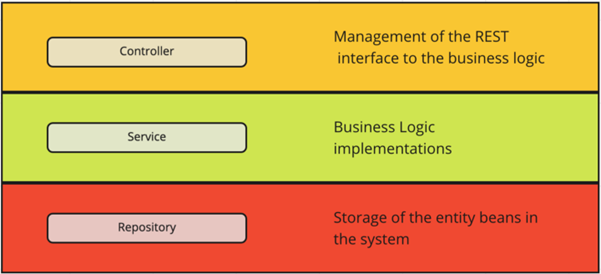
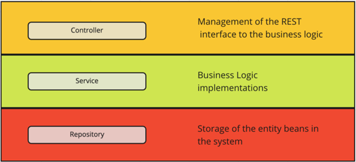
Source: https://tom-collings.medium.com/controller-service-repository-16e29a4684e5
Example
The following example shows how each of the components communicate with each other in this architecture. This example will show how the system processes files uploaded by a user:
So, the frontend:
-
Allows the user to upload files on the UI.
-
Splits up the files into fixed sized chunks.
-
Uses a REST API to tell the backend how many files it will send.
The backed:
- Receives that number and sends over the same number of file ids, using controller and service layer logic.
The frontend:
- Uses these file ids to associate each chunk with their file, and sends the chunk to the backend using a REST API.
- Calls the ‘process’ REST API
The backend:
- The backend stores the chunks in a directory on the server.
- Recieves ‘process’ api call on the controller layer and performs business logic on the service layer. The ‘process’ logic goes through the file and re-formats the chunks so that each variable within the file has its own chunk, this is to allow the variables to be accessed quickly. The service layer then uses the repository layer logic to send a SQL request to the database.
The database:
- Processes the SQL query and stores the file chunks within the database.
After the chunks are stored in the database they can easily be accessed by other logic to visualise the data.
Backend
Overview
As we are using a controller-service-repository architecture, the backend has its functions modularised into these concepts.
Example of the file hierarchy Controller -> Service -> Repositories:
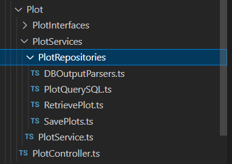
Sets of controller/service/repository files for different business logic functionalities have been separated into their own directories. This is to keep the code self-contained, and maintainable. The directories can be seen below:
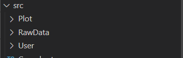
Plot – Focuses on the business logic for plotting and visualising data.
RawData – Focuses on the business logic for receiving and processing user uploaded files.
User – Focuses on user related business logic, (i.e login, signup).
Controller-Service-Repository
The controller will contain the REST API definitions and then apply the outcome of those to a service function. The REST APIs are created using the “express” ts library, which is initialised in the index.ts and router.ts files.
Index file:
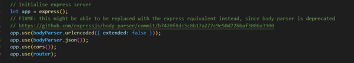
Router.ts:
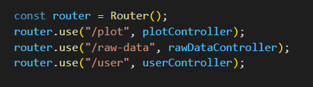
Example of creating REST API with express
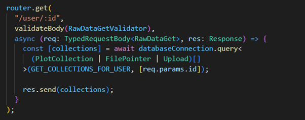
More on express can be found at: https://expressjs.com/
The service function implements the business logic and functionality and then applys the outcome of those to the repository logic if needed.
The repository manages communications to the database with SQL queries. The SQL queries are managed using the “mysql12” library which is initialised in the databaseConnections.ts file. The connection details that are used to initialise the library can be found in the .env file.
databaseConnections.ts file:
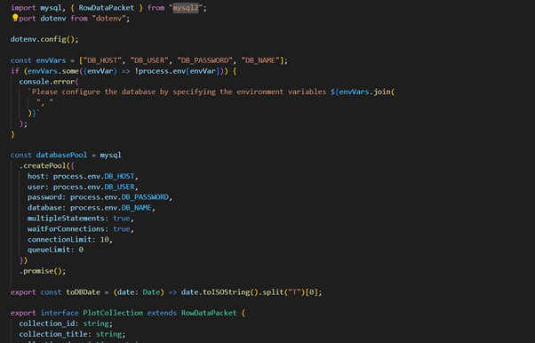
.env file with password redacted:
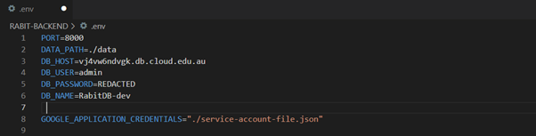
Database
The architecture for the database can be seen in the following UML diagram:
 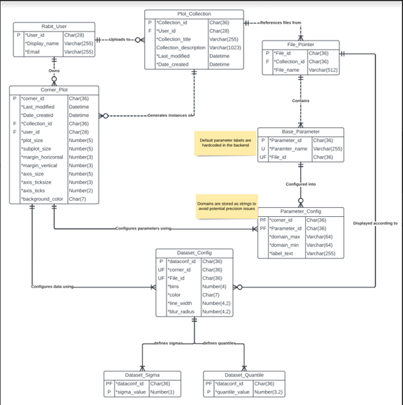
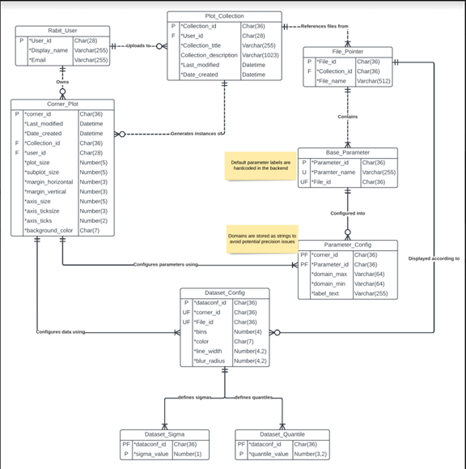
The Plot_Collection, File_Pointer and Base_Parameter tables are populated when a user uploads files.
-
The File_Pointer table - Associates the files with their collections. It also associates the file name with its file_id.
-
The Base_Parameter table - Associates the Parameter_id’s with their file_id’s. The Parameter_id is a unique identifier for a parameter within a file. It is also used to identify the chunks of a file after it has the ‘process’ api called on it.
-
The Plot_Collection table - Associates collections with users, also various data on the collection itself.
The Rabit_User table – Used to stored information on each user.
The remaining tables, i.e: Corner_Plot, Dataset_Config, Parameter_Config, Dataset_Sigma, and Dataset_Quantile, are populated when a user shares a visualised plot. This means that data on a visualised plot is not stored unless it is shared.
Contributing to RABIT
RABIT is an open source project, made by you and us, for you and us.
We welcome contributions from anyone for any purpose. Whether it's a bug fix, adding new features, code cleanup, fixing typos and much more.
Due to the size and complexity of the codebase, we have the following procedures for contributions:
Submitting issues
Do you encounter a bug in RABIT?
Or you may have a bright idea for a new feature that will greatly enhance the app?
We'd highly appreciate you to let us know by submitting an issue!
How issues are organised
There are two issue trackers for the project:
- All non-documentation related issues should go to RABIT-COMMON isssues
- Documentation-related issues (i.e. those for this site) should go to RABIT-DOCS issues
It's important to open an issue in the correct tracker. Otherwise, your issue may be ignored or closed.
First steps
Before you open up a new issue, make sure to search the issue tracker for any existing similar issues. Often times someone has already made the bug report or enhancement suggestion.
Do you need really to create an issue?
If you don't really have a bug report or enhancements to suggest, and are just asking questions or showing off a cool thing you made with RABIT, then it would be better to post those on our community discussions page. We'd like to keep the issue tracker to only contain bug reports and enhancement proposals.
Creating an issue
We use GitHub issue template to make it easier for you and us.
Select the appropriate issue category (bug report or feature request) then fill the form appropriately.

If necessary, post a screenshot to help explain your issue more clearly. However, do not post screenshots of error logs or stack traces. Screenshots of logs (or images of text in general) makes it unnecessarily difficult for everyone to search the error (as it can't be indexed by GitHub) or select the text. In addition, folks who use assistive technologies (e.g. screen reader) or those with poor connections may struggle to even be able to read the log at all.
When posting an issue, make sure that sensitive or confidential information has been appropriately censored or removed.
Things to keep in mind
All contributions will be released under the ISC license. Please ensure that any third-party code used is compatible with this license.
When commenting or creating issues, please follow the GitHub community guidelines.
Contributing code
Branching rules
Frontend and backend repositories
The following rules apply for the RABIT-FRONTEND and RABIT-BACKEND.
Several branches exist in these repositories:
- The
mainbranch is where a stable version of the app exists. If you're a user, you want to build RABIT from this branch. - The
devbranch is where all changes that are slated for the next branch resides. This branch contains the latest features and improvements but may contain bugs or regressions as the codebase has not been thoroughly tested. All feature and development branches should be made from this branch. - Branches with
feature/prefix contains in-progress work relating to new features and enhancements. Feature names should be concise and descriptive and in kebab case, for examplefeature/plot-sharing. - Branches with
issue/prefix contains in-progress work relating to a bug. The issue name should be a concise description of what the issue is about (e.g.issue/broken-build).
Once the work on the feature or issue branch is complete, they will be merged to the dev branch. When a new version is ready to be released, the latest commit from dev will be merged to the main branch.
Common repository
The convention for RABIT-COMMON is similar to the one above. However, there is no stable branch here, with the main branch acting as dev branch where all feature and development branches are based on.
Contribution workflow
- Decide on where the code should go
- If your contribution spans both frontend and backend, then you will need to do the next steps for each repository.
- Read and understand the build process outlined in the "Running your own RABIT instance" page
- Create a new branch from
dev(frontend and backend) ormain(common)- If you don't have push access to the repositories (which, unless you're a maintainer you likely won't), you may need to fork the repository first.
- Work on the branch
- Create a pull request
- Follow the instructions given in the provided template
- Frontend and backend: make sure to set
devas the base branch
- Wait until one of our maintainers approved your PR
- Your changes should be up in the
dev/mainbranch! 🥳
Things to keep in mind
All contributions will be released under the ISC license. Please ensure that any third-party code used is compatible with this license.
When commenting or creating PRs, please follow the GitHub community guidelines.
Contributing documentation
The documentation is written as a collection of markdown files, which are then converted to a website using mdbook.
Branching rules
- The
mainbranch is where the current version of the documentation is built from. All development branches should be based on this branch. - Branches with
pages/prefix contains in-progress work on specific page or section. For example, improvements to the user guide has the name ofpages/user-guide. - Branches with
issue/prefix contains in-progress work relating to a bug. This could be typos, grammar and writing style or deployment issues. - The
gh-pagesbranch contains the compiled site files built frommainbranch. This branch is automatically built using a GitHub action, and they should not be modified or branched from.
File structure
book.toml
This file contains the configuration for mdbook. You shouldn't need to change anything here.
src
This directory contains all source markdown files, images, code or any files that will be included in the compiled site.
src/SUMMARY.md
This file creates the table of contents that you see in the sidebar. See the mdbook documentation for its syntax.
book (local build only)
This directory is automatically generated using mdbook's build commands. It contains the site's build artefacts.
Other
src/imagescontains all images of the site.src/codecontains all code files that is included in the documentation using the{{#include}}directive.
Contribution workflow
- Create a branch from
main- If you don't have push access to the repositories (which, unless you're a maintainer you likely won't), you may need to fork the repository first.
- Read and understand the build process outlined in the "Editing, Building, Local Deployment" section of README
- Work on the branch
- Create a pull request
- Follow the instructions given in the provided template
- Wait until one of our maintainers approved your PR and merge it to
main - The site will be rebuilt, and your changes will be published.
Things to keep in mind
All contributions will be released under the ISC license. Please ensure that any third-party code used is compatible with this license.
When commenting or creating PRs, please follow the GitHub community guidelines.